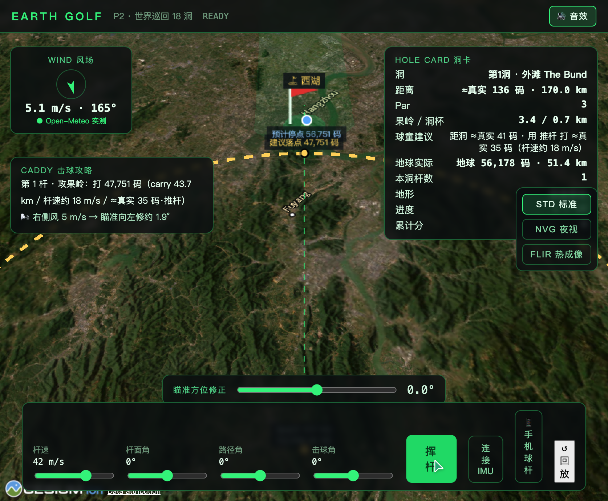
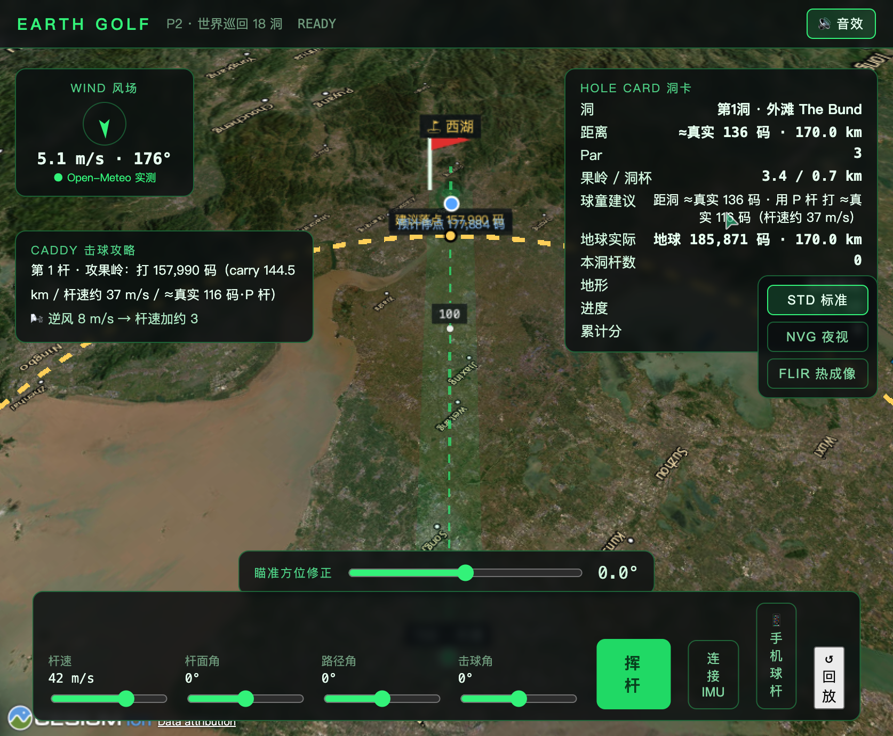
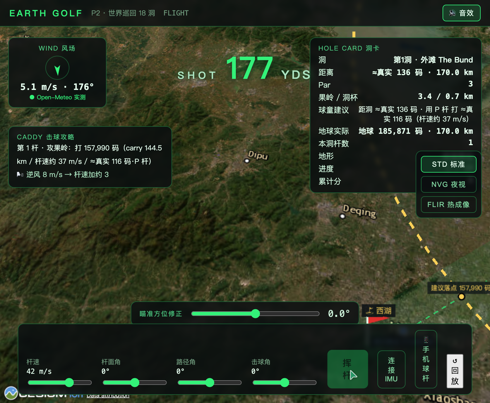
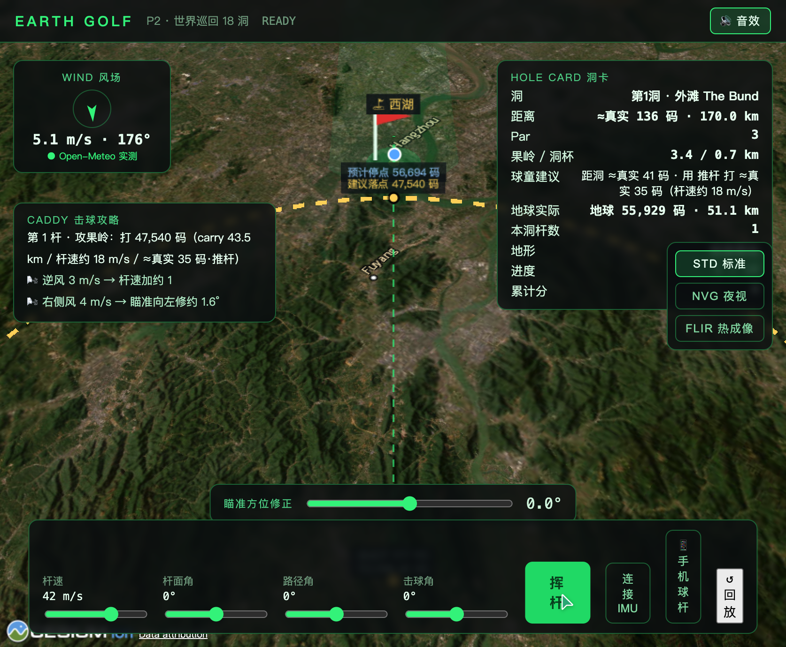

INDEPENDENT GAME · 2026
把整颗地球
变成高尔夫球场
九轴 IMU 真挥杆手感 + Cesium 3D 地球舞台 + 指挥中心 HUD。 上海 → 西湖，巴黎 → 伦敦，东京 → 富士山 —— 每一次挥杆，都是一次洲际旅行。




为什么之前没人做过？
🛰️
Cesium 3D 地球
真实地形 + 大圆航线弹道。没有任何独立游戏把整个地球做成可玩的球场。
🎯
IMU 真挥杆
九轴传感器物理核零重写。你手腕的每一次甩动都转化为精确的 clubSpeed。
🌬️
真实天气风场
Open-Meteo 实时风场 —— 同一洞，全球玩家面对同样的风。每日公平榜。
👁️
NVG / FLIR 滤镜
沙漠洞自动切 FLIR 热成像，夜间洞切 NVG。纯前端 shader，零 API key。
✈️
航班 = 移动障碍
纽约→华盛顿洞，球撞上真实航班 = 慢镜头彩蛋（P2 计划中）。
🎮
指挥中心 HUD
卫星运镜 + 风速罗盘 + 球童建议 + 大字结算。对标 God's Eye View 风格。
18 洞世界巡回
每个洞 = 地球上一段真实地标间的大圆航线。地形本身就是障碍。
1
上海外滩 → 杭州西湖 · 热身洞，平原
180 km2
巴黎 → 伦敦 · 英吉利海峡 = 水障碍
340 km3
东京 → 富士山顶 · 爬坡短杆
100 km4
纽约 → 华盛顿 · 航班移动障碍
330 km5
撒哈拉 → 吉萨金字塔 · FLIR 滤镜，沙坑加速
200 km6
珠峰大本营 → 加德满都 · 高原稀薄空气
160 km7
悉尼 → 大堡礁 · NVG 夜场 + 侧风
250 km8
亚马逊雨林腹地 · 长草骤停
150 km9
好望角 → 开普敦 · 强风洞
130 km10
莫斯科 → 圣彼得堡 · 冰雪果岭
700 km11
夏威夷火山口 · 火山灰乱流
380 km12
阿尔卑斯 → 勃朗峰 · 山坳回旋
290 km13
迪拜 → 阿布扎比 · 沙漠逆风
140 km14
里约 → 面包山 · 海风 + 热带雨
300 km15
阿拉斯加冰川 · 冰面零滚动
420 km16
冰岛间歇泉 · 极光辅助瞄准
450 km17
大峡谷 → 南缘 · 峡谷乱流
350 km18
南极点终极洞 · 极夜 + 极光 + NVG
—想试试？
APK 还在内部测试中。留个联系方式，或关注 itch.io Devlog 获取最新下载。